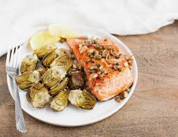
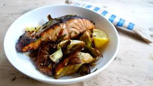

Directions
- Preheat the oven to 220ºC/425ºF/gas 7.
- Line a large baking tray with greaseproof paper and rub with a drizzle of olive oil.
- Lay 8 pieces (roughly an arm’s length each) of butcher’s string at 5cm intervals widthways across the baking tray, then place one salmon fillet on top, skin-side down.
- Toast the almonds in a dry frying pan until golden, tossing regularly, then cool for 1 minute and tip into a food processor.
- Peel, roughly chop and add the garlic, finely grate in the lemon zest, then tear in the ciabatta. Season with black pepper, then pulse until finely chopped. Carefully layer over the salmon.
- Halve 1 lemon. Trim the artichoke stalks 2cm from the base. Peel away the tough outer leaves until you reach the paler ones that are tender enough to eat, then trim the heads to 3cm, rubbing with the cut lemon as you go to prevent discolouration. Halve the artichokes, carefully scoop out and discard the hairy chokes, then finely slice the rest.
- Drain and roughly slice the jarred artichoke hearts, reserving the oil.
- Drizzle 1 tablespoon of artichoke oil into a large frying pan and place over a high heat, add the jarred and fresh artichokes and fry for 2 minutes, or until warm. Pick and roughly chop the mint leaves, scatter into the pan, then remove from the heat.
- Spoon the artichoke mix evenly over the salmon, drizzle with 1 tablespoon of the artichoke oil, then lay the other salmon fillet on top, skin-side up.
- Arrange the bacon over the top in a criss-cross pattern, then place the thyme sprigs on top. Tie the string up and around both fillets to secure the filling. Drizzle over a little artichoke oil and sprinkle any excess breadcrumbs back over the top.
- Place in the middle of the oven and immediately reduce the temperature to 180ºC/350ºF/gas 4. Roast for 35 to 40 minutes, or until the bacon and salmon skin is golden and crisp.
- Rest for 10 minutes before serving with the remaining lemon cut into wedges for squeezing over. Delicious served with buttered new potatoes and a crisp green salad
Saucy

This is a delicious dish thatis able to feed one person and it is very inexpensive
Something different
It will tickle your tastebuds and leave you feeling good
Lemon Zest
A tantalizing dish that will give you a new zest for life
What i've learned
- I learnt how to list effectively
- i learnt how to use italics